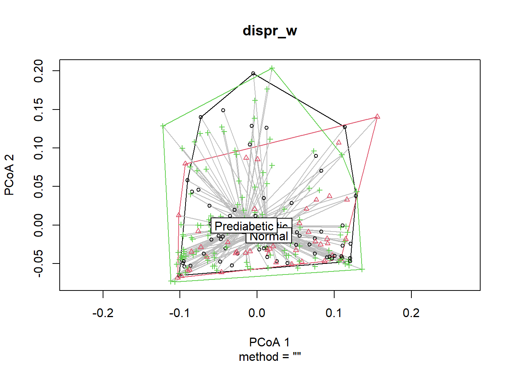
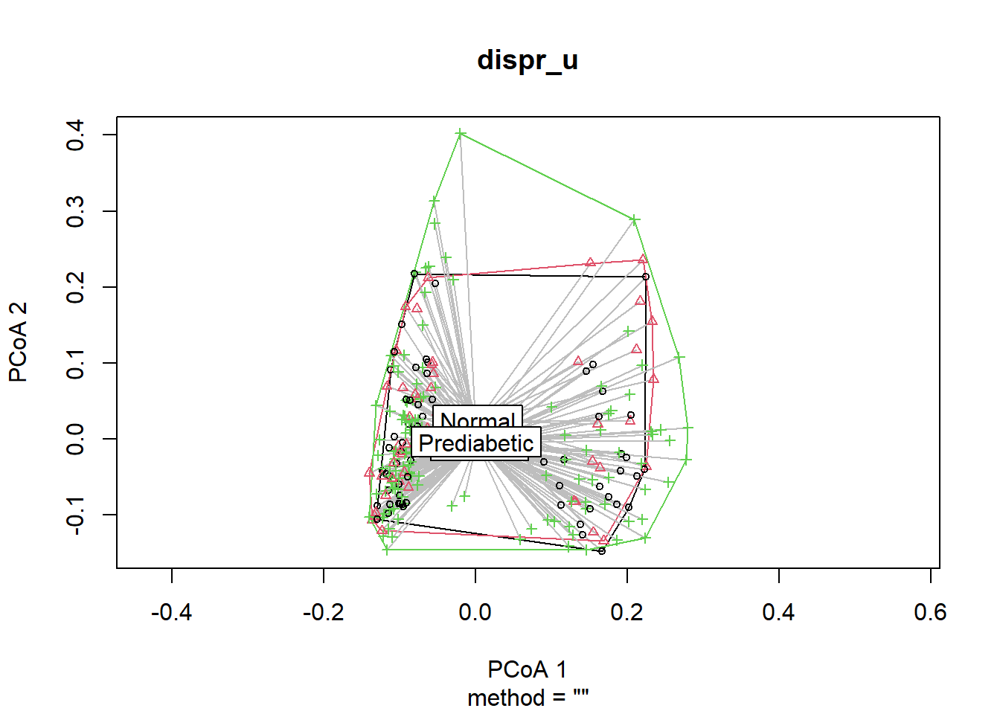

In this script, we will take the phylogeny of food items into account in clustering individuals according to their dietary data. In order to do so, we will use the phyloseq package, which uses phylogeny of microbes and their abundance. We will replace microbes with food items consumed by our dietary study participants.
Name the path to DietDiveR directory where input files are pulled.
main_wd <- "~/GitHub/DietDiveR"If you have not downloaded and installed the phyloseq package yet, you can do so by first installing BiocManager (if you have not done so):
if (!require("BiocManager", quietly = TRUE)) install.packages("BiocManager")Then download and install the phyloseq package.
BiocManager::install("phyloseq")Install the devtools package necessary for installing the pairwiseAdonis package.
if (!require("devtools", quietly = TRUE))install.packages("devtools")Install pairwise adonis function from Github. (https://github.com/pmartinezarbizu/pairwiseAdonis)
devtools::install_github("pmartinezarbizu/pairwiseAdonis/pairwiseAdonis")Load necessary packages.
library(foreign)
library(vegan)
library(phyloseq)
library(ggplot2)
library(ggtree) # Shows how to cite the ggtree package. Make sure to cite it accordingly.
library(cluster) # necessary to the "pairwiseAdonis" package.
library(pairwiseAdonis)Load the necessary functions.
source("lib/specify_data_dir.R")
source("lib/ordination.R")
source("lib/ggplot2themes.R")
source("lib/sort_IFC_by_ID.R")
source("lib/plot.axis.1to4.by.factor.R")Load the distinct 100 colors for use.
distinct100colors <- readRDS("lib/distinct100colors.rda")You can come back to the main directory by:
setwd(main_wd)Specify the directory where the data is.
SpecifyDataDirectory(directory.name = "eg_data/NHANES/Laboratory_data/")Load IFC table, and sort the columnnames (userID), leaving the last column (taxonomy) intact. This dataframe will be saved as food. Also, save food as a .txt file to be used in the “correlation between Axes and foods” section.
SortIFCByID(ifc.input = "Foodtree/Food_D12_FC_QC_demo_QCed_males60to79_3Lv.food.ifc.txt",
outfn.for.corr.axis = "Foodtree/Food_D12_FC_QC_demo_QCed_males60to79_3Lv.food.ifc_sorted.txt")food is a matrix of Food descriptions (rows) x SampleID (columns).
The column name of “food” is the ordered SEQNs preceded with an ‘X’.
head(food)[1:6, 1:4]## X83755 X83789 X83820 X83834
## Milk NFS 0.00 0 0.0 0.00
## Milk whole 0.00 0 122.0 0.00
## Milk reduced fat 2 76.25 0 76.4 320.25
## Milk low fat 1 0.00 0 0.0 0.00
## Milk fat free skim 0.00 0 0.0 0.00
## Milk lactose free reduced fat 2 0.00 0 0.0 0.00Format the food file and create an ifc_table called IFC.
PrepFood(data = food)Load taxonomy file generated by the MakeFoodTree function.
tax <- read.delim("Foodtree/Food_D12_FC_QC_demo_QCed_males60to79_3Lv.tax.txt")Format the tax file and create a taxonomy table called TAX.
PrepTax(data=tax)Load the demographics data.
demog <- read.xport("../Raw_data/DEMO_I.XPT") Load our dataset that has the “GLU_index” information.
glu <- read.delim( file="QCtotal_d_ga_body_meta_glu_comp_2.txt", sep= "\t", header= T )Take out only the SEQN and GLU_index.
SEQN_GLU <- glu[, c("SEQN", "GLU_index")]Add GLU_index to metadata.
demog_glu <- merge(x=SEQN_GLU, y=demog, all.x=T, by="SEQN")Now, it has GLU_index.
head(demog_glu, 2)## SEQN GLU_index SDDSRVYR RIDSTATR RIAGENDR RIDAGEYR RIDAGEMN RIDRETH1
## 1 83733 Prediabetic 9 2 1 53 NA 3
## 2 83736 Normal 9 2 2 42 NA 4
## RIDRETH3 RIDEXMON RIDEXAGM DMQMILIZ DMQADFC DMDBORN4 DMDCITZN DMDYRSUS
## 1 3 1 NA 2 NA 2 2 7
## 2 4 2 NA 2 NA 1 1 NA
## DMDEDUC3 DMDEDUC2 DMDMARTL RIDEXPRG SIALANG SIAPROXY SIAINTRP FIALANG
## 1 NA 3 3 NA 1 2 2 1
## 2 NA 4 3 1 1 2 2 1
## FIAPROXY FIAINTRP MIALANG MIAPROXY MIAINTRP AIALANGA DMDHHSIZ DMDFMSIZ
## 1 2 2 1 2 2 1 1 1
## 2 2 2 1 2 2 1 5 5
## DMDHHSZA DMDHHSZB DMDHHSZE DMDHRGND DMDHRAGE DMDHRBR4 DMDHREDU DMDHRMAR
## 1 0 0 0 1 53 2 3 3
## 2 0 2 0 2 42 1 4 3
## DMDHSEDU WTINT2YR WTMEC2YR SDMVPSU SDMVSTRA INDHHIN2 INDFMIN2 INDFMPIR
## 1 NA 24328.56 25282.43 1 125 4 4 1.32
## 2 NA 17627.67 18234.74 2 126 7 7 1.23Add ‘X’ in front of the SEQN and define it as rownames.
rownames(demog_glu) <- paste("X", demog_glu$SEQN, sep="") Prep metadata for generating a phyloseq object.
PrepMeta_NHANES(data = demog_glu)Load foodtree file generated by the MakeFoodTree function.
foodtree <- read_tree("Foodtree/Food_D12_FC_QC_demo_QCed_males60to79_3Lv.nwk")It is OK to see a message that says:
“Found more than one class”phylo” in cache; using the first, from namespace ‘phyloseq’
Also defined by ‘tidytree’”
Format the food tree and save it as TREE.
PrepTree(data=foodtree)It is OK to see the same message as the previous line.
phyfoods <- phyloseq(IFC, TAX, SAMPLES, TREE)It is OK to see the same message as the previous line. They may appear multiple times.
Check your metadata by using the functions in the phyloseq package. Show the sample names. Change n to adjust the number of rows to show.
head(sample_names(phyfoods), n=6) ## [1] "X83755" "X83789" "X83820" "X83834" "X83886" "X83894"Show their metadata.
head(sample_data(phyfoods), n=4)## SEQN GLU_index SDDSRVYR RIDSTATR RIAGENDR RIDAGEYR RIDAGEMN RIDRETH1
## X83755 83755 Diabetic 9 2 1 67 NA 4
## X83789 83789 Prediabetic 9 2 1 66 NA 3
## X83820 83820 Normal 9 2 1 70 NA 3
## X83834 83834 Prediabetic 9 2 1 69 NA 4
## RIDRETH3 RIDEXMON RIDEXAGM DMQMILIZ DMQADFC DMDBORN4 DMDCITZN DMDYRSUS
## X83755 4 2 NA 1 1 1 1 NA
## X83789 3 2 NA 2 NA 1 1 NA
## X83820 3 2 NA 2 NA 1 1 NA
## X83834 4 2 NA 2 NA 1 1 NA
## DMDEDUC3 DMDEDUC2 DMDMARTL RIDEXPRG SIALANG SIAPROXY SIAINTRP FIALANG
## X83755 NA 5 2 NA 1 2 2 1
## X83789 NA 5 6 NA 1 2 2 1
## X83820 NA 5 6 NA 1 2 2 1
## X83834 NA 3 5 NA 1 2 2 1
## FIAPROXY FIAINTRP MIALANG MIAPROXY MIAINTRP AIALANGA DMDHHSIZ DMDFMSIZ
## X83755 2 2 1 2 2 1 1 1
## X83789 2 2 1 2 2 1 2 1
## X83820 2 2 1 2 2 NA 2 1
## X83834 2 2 1 2 2 1 1 1
## DMDHHSZA DMDHHSZB DMDHHSZE DMDHRGND DMDHRAGE DMDHRBR4 DMDHREDU DMDHRMAR
## X83755 0 0 1 1 67 1 5 2
## X83789 0 0 1 1 66 1 5 6
## X83820 0 0 2 1 70 1 5 6
## X83834 0 0 1 1 69 1 3 5
## DMDHSEDU WTINT2YR WTMEC2YR SDMVPSU SDMVSTRA INDHHIN2 INDFMIN2 INDFMPIR
## X83755 NA 14080.10 13991.64 1 126 5 5 2.04
## X83789 NA 181684.44 181461.24 1 132 10 9 5.00
## X83820 NA 56259.36 57057.11 2 132 10 8 4.18
## X83834 NA 11885.52 12267.52 2 131 3 3 0.97Show only the columns (variables) of metadata.
sample_variables(phyfoods)## [1] "SEQN" "GLU_index" "SDDSRVYR" "RIDSTATR" "RIAGENDR" "RIDAGEYR"
## [7] "RIDAGEMN" "RIDRETH1" "RIDRETH3" "RIDEXMON" "RIDEXAGM" "DMQMILIZ"
## [13] "DMQADFC" "DMDBORN4" "DMDCITZN" "DMDYRSUS" "DMDEDUC3" "DMDEDUC2"
## [19] "DMDMARTL" "RIDEXPRG" "SIALANG" "SIAPROXY" "SIAINTRP" "FIALANG"
## [25] "FIAPROXY" "FIAINTRP" "MIALANG" "MIAPROXY" "MIAINTRP" "AIALANGA"
## [31] "DMDHHSIZ" "DMDFMSIZ" "DMDHHSZA" "DMDHHSZB" "DMDHHSZE" "DMDHRGND"
## [37] "DMDHRAGE" "DMDHRBR4" "DMDHREDU" "DMDHRMAR" "DMDHSEDU" "WTINT2YR"
## [43] "WTMEC2YR" "SDMVPSU" "SDMVSTRA" "INDHHIN2" "INDFMIN2" "INDFMPIR"Check the level 1 foods in your food tree.
L1s <- tax_table(phyfoods)[, "L1"]
as.vector(unique(L1s))## [1] "L1_Milk_and_Milk_Products"
## [2] "L1_Meat_Poultry_Fish_and_Mixtures"
## [3] "L1_Eggs"
## [4] "L1_Dry_Beans_Peas_Other_Legumes_Nuts_and_Seeds"
## [5] "L1_Grain_Product"
## [6] "L1_Fruits"
## [7] "L1_Vegetables"
## [8] "L1_Fats_Oils_and_Salad_Dressings"
## [9] "L1_Sugars_Sweets_and_Beverages"The L1 categories that are included in your dataset will be shown here. The following analysis (food tree and ordination) assumes that your dataset has at least one food in each of the nine L1 categories. Your dataset most likely contains all the nine categories, but if your dataset only contains special diet-adhering subjects, you may need to adjust the source code to accommodate missing L1 categories.
Change to the folder called “Ordination” in your “Ordination” folder.
SpecifyDataDirectory(directory.name = "eg_data/NHANES/Laboratory_data/Ordination/")Perform Principal Coordinate Analysis (PCoA) with WEIGHTED unifrac distance of your food data. This may take a few minutes depending on your data size. e.g. a large phyloseq object (7.9 MB) could take a few minutes.
ordinated_w <- phyloseq::ordinate(phyfoods, method="PCoA", distance="unifrac", weighted=TRUE) A warning message may appear saying:
Warning message:
In matrix(tree$edge[order(tree$edge[, 1]), ][, 2], byrow = TRUE, :
data length [xxxx] is not a sub-multiple or multiple of the number of rows [xxxx]
This warns that the food tree we are using is not bifurcating. But it is OK, since we do not expect our food trees to be bifurcating.
Save the percent variance explained by the axes as a vector to use in plots.
eigen_percent_w <- ordinated_w$values$Relative_eigSave the percent variance explained as a txt file.
Eigen(eigen.input = eigen_percent_w,
output.fn="Food_D12_FC_QC_demo_QCed_males60to79_3Lv_ord_WEIGHTED_eigen.txt")Merge the first n axes to the metadata and save it as a txt file. The merged dataframe, meta_usersdf, will be used for plotting.
MergeAxesAndMetadata_NHANES(ord.object= ordinated_w, number.of.axes= 10, meta.data= demog_glu,
output.fn= "Food_D12_FC_QC_demo_QCed_males60to79_3Lv_ord_WEIGHTED_meta_users.txt")Load the output again for plotting.
loaded_glu_w <- read.table("Food_D12_FC_QC_demo_QCed_males60to79_3Lv_ord_WEIGHTED_meta_users.txt",
sep="\t", header=T)Convert the GLU_index as a factor to plot it in order.
loaded_glu_w$GLU_index <- factor(loaded_glu_w$GLU_index, levels= c("Normal", "Prediabetic", "Diabetic"))
table(loaded_glu_w$GLU_index)##
## Normal Prediabetic Diabetic
## 47 127 62Load the eigenvalues as a vector.
eigen_loaded <- read.table("Food_D12_FC_QC_demo_QCed_males60to79_3Lv_ord_WEIGHTED_eigen.txt", header=T)Make a vector that contains the variance explained.
eigen_loaded_vec <- eigen_loaded[, 2]Save Axes 1 & 2, 1 & 3, 2 & 3, 3 & 4, 2 & 4 biplots with and without ellipses with specified confidence interval. The reults are saved with filenames with the specified “prefix_AxisXY.pdf” or “prefix_AxisXY_ellipses.pdf”. You need to supply the same number of colors in the order of the factor level to be used. dot.colors are for datapoints, and ellipses.colors are for ellipses outlines.
PlotAxis1to4ByFactor(axis.meta.df = loaded_glu_w,
factor.to.color = "GLU_index",
eigen.vector = eigen_percent_w ,
dot.colors = c("steelblue3", "yellow", "hotpink"),
ellipses.colors = c("steelblue3", "gold3", "hotpink"),
ellipses.cflevel = 0.95,
out.prefix = "Food_D12_FC_QC_demo_QCed_males60to79_3Lv_ord_WEIGHTED")The GLU_index groups look different. Use beta-diversity and adonis tests to see if they are actually distinct from one another.
Generate a weighted unifrac distance matrix.
dist_matrix_w <- phyloseq::distance(phyfoods, method = "wunifrac") # weightedPerform dispersion test.
vegan::betadisper computes centeroids and distance of each datapoint from it.
dispr_w <- vegan::betadisper(d=dist_matrix_w, phyloseq::sample_data(phyfoods)$GLU_index)Show the centroids and dispersion of each group.
plot(dispr_w)
The distribution of the dots of each GLU_index group should be the same as in the Axis1 x Axis 2 biplot generated by the PlotAxis1to4ByFactor function.
Use dispr to do a permutation test for homogeneity of multivariate dispersion. The set.seed function ensures the same permutation results will be obtained every time; otherwise, the p-values will slightly differ each run, as it is a permutation test.
set.seed(123)
vegan::permutest(dispr_w, perm = 5000)##
## Permutation test for homogeneity of multivariate dispersions
## Permutation: free
## Number of permutations: 5000
##
## Response: Distances
## Df Sum Sq Mean Sq F N.Perm Pr(>F)
## Groups 2 0.000378 0.00018895 0.1913 5000 0.8326
## Residuals 233 0.230160 0.00098781If p>0.05, which is true in this case, the dispersion of each group are not different, and the assumption for adonis is met.
Use adonis to test whether there is a difference between groups’ composition. i.e., composition among groups (food they consumed) is similar or not.
set.seed(123)
vegan::adonis(dist_matrix_w ~ phyloseq::sample_data(phyfoods)$GLU_index, permutations = 5000)##
## Call:
## vegan::adonis(formula = dist_matrix_w ~ phyloseq::sample_data(phyfoods)$GLU_index, permutations = 5000)
##
## Permutation: free
## Number of permutations: 5000
##
## Terms added sequentially (first to last)
##
## Df SumsOfSqs MeanSqs F.Model
## phyloseq::sample_data(phyfoods)$GLU_index 2 0.0943 0.047128 1.4115
## Residuals 233 7.7794 0.033388
## Total 235 7.8737
## R2 Pr(>F)
## phyloseq::sample_data(phyfoods)$GLU_index 0.01197 0.04699 *
## Residuals 0.98803
## Total 1.00000
## ---
## Signif. codes: 0 '***' 0.001 '**' 0.01 '*' 0.05 '.' 0.1 ' ' 1The results indicate that the overall adonis is significant (p<0.05). If overall adonis is significant, you can run pairwise adonis to see which group pairs are different.
pairwise.adonis(dist_matrix_w, phyloseq::sample_data(phyfoods)$GLU_index, perm = 5000,
p.adjust.m = "none") ## pairs Df SumsOfSqs F.Model R2 p.value
## 1 Diabetic vs Prediabetic 1 0.04637781 1.399251 0.007427052 0.10237952
## 2 Diabetic vs Normal 1 0.03741384 1.104643 0.010218274 0.28174365
## 3 Prediabetic vs Normal 1 0.05402857 1.619903 0.009330170 0.04159168
## p.adjusted sig
## 1 0.10237952
## 2 0.28174365
## 3 0.04159168 .Generate and save an WEIGHTED unifrac distance matrix of “Samples”.
WeightedUnifracDis(input.phyloseq.obj = phyfoods,
output.fn = "Food_D12_FC_QC_demo_QCed_males60to79_3Lv_ord_WEIGHTED_uni_dis.txt") Perform Principal Coordinate Analysis (PCoA) with UNweighted unifrac distance of your food data. This may take a few minutes depending on your data size. e.g. a large phyloseq object (7.9 MB) takes ~ 1 min.
ordinated_u <- phyloseq::ordinate(phyfoods, method="PCoA", distance="unifrac", weighted=FALSE) Save the percent variance explained by the axes as a vector to use in plots.
eigen_percent_u <- ordinated_u$values$Relative_eigSave the percent variance explained as a txt file.
Eigen(eigen.input = eigen_percent_u,
output.fn="Food_D12_FC_QC_demo_QCed_males60to79_3Lv_ord_UNweighted_eigen.txt")Merge the first n axes to the metadata and save it as a txt file. The merged dataframe, meta_usersdf, will be used for plotting.
MergeAxesAndMetadata_NHANES(ord.object= ordinated_u, number.of.axes= 10, meta.data= demog_glu,
output.fn= "Food_D12_FC_QC_demo_QCed_males60to79_3Lv_ord_UNweighted_meta_users.txt")Load the output again for plotting.
loaded_glu_u <- read.table("Food_D12_FC_QC_demo_QCed_males60to79_3Lv_ord_UNweighted_meta_users.txt",
sep="\t", header=T) Convert the GLU_index as a factor to plot it in order.
loaded_glu_u$GLU_index <- factor(loaded_glu_u$GLU_index, levels = c("Normal", "Prediabetic", "Diabetic"))Take a look at meta_usersdf_loaded.
head(loaded_glu_u, 2)## Row.names SEQN GLU_index SDDSRVYR RIDSTATR RIAGENDR RIDAGEYR RIDAGEMN
## 1 X83755 83755 Diabetic 9 2 1 67 NA
## 2 X83789 83789 Prediabetic 9 2 1 66 NA
## RIDRETH1 RIDRETH3 RIDEXMON RIDEXAGM DMQMILIZ DMQADFC DMDBORN4 DMDCITZN
## 1 4 4 2 NA 1 1 1 1
## 2 3 3 2 NA 2 NA 1 1
## DMDYRSUS DMDEDUC3 DMDEDUC2 DMDMARTL RIDEXPRG SIALANG SIAPROXY SIAINTRP
## 1 NA NA 5 2 NA 1 2 2
## 2 NA NA 5 6 NA 1 2 2
## FIALANG FIAPROXY FIAINTRP MIALANG MIAPROXY MIAINTRP AIALANGA DMDHHSIZ
## 1 1 2 2 1 2 2 1 1
## 2 1 2 2 1 2 2 1 2
## DMDFMSIZ DMDHHSZA DMDHHSZB DMDHHSZE DMDHRGND DMDHRAGE DMDHRBR4 DMDHREDU
## 1 1 0 0 1 1 67 1 5
## 2 1 0 0 1 1 66 1 5
## DMDHRMAR DMDHSEDU WTINT2YR WTMEC2YR SDMVPSU SDMVSTRA INDHHIN2 INDFMIN2
## 1 2 NA 14080.1 13991.64 1 126 5 5
## 2 6 NA 181684.4 181461.24 1 132 10 9
## INDFMPIR Axis.1 Axis.2 Axis.3 Axis.4 Axis.5
## 1 2.04 -0.11664677 -0.02798665 0.2150702 -0.101761495 -0.01171610
## 2 5.00 0.01421703 -0.07604162 -0.1075092 -0.007704721 -0.09039281
## Axis.6 Axis.7 Axis.8 Axis.9 Axis.10
## 1 0.13498463 -0.0115458 0.08167232 0.04694426 -0.09992649
## 2 -0.05136006 -0.0142396 0.08034174 0.12698673 0.02684341Save Axes 1 & 2, 1 & 3, 2 & 3, 3 & 4, 2 & 4 biplots with and without ellipses with specified confidence interval. The reults are saved with filenames with the specified “prefix_AxisXY.pdf” or “prefix_AxisXY_ellipses.pdf”. You need to supply the same number of colors in the order of the factor level to be used. dot.colors are for datapoints, and ellipses.colors are for ellipses outlines.
[NOTE] For the “UNweighted” results, , change the input, eigen vectors, and prefix names accordingly.
PlotAxis1to4ByFactor(axis.meta.df = loaded_glu_u,
factor.to.color = "GLU_index",
eigen.vector = eigen_percent_u ,
dot.colors = c("steelblue3", "yellow", "hotpink"),
ellipses.colors = c("steelblue3", "gold3", "hotpink"),
ellipses.cflevel = 0.95,
out.prefix = "Food_D12_FC_QC_demo_QCed_males60to79_3Lv_ord_UNweighted")It is not clear from the plots whether The GLU_index groups are different. Use beta-diversity and adonis tests to see if they are they actually distinct from one another.
Generate an UNweighted unifrac distance matrix.
dist_matrix_u <- phyloseq::distance(phyfoods, method="unifrac") # UNweightedDispersion test and plot
vegan::betadisper computes centeroids and distance of each datapoint from it.
dispr_u <- vegan::betadisper(dist_matrix_u, phyloseq::sample_data(phyfoods)$GLU_index)Can show the centroids and dispersion of each group.
plot(dispr_u)
Use dispr to do a permutation test for homogeneity of multivariate dispersion.
set.seed(123)
vegan::permutest(dispr_u, perm = 5000)##
## Permutation test for homogeneity of multivariate dispersions
## Permutation: free
## Number of permutations: 5000
##
## Response: Distances
## Df Sum Sq Mean Sq F N.Perm Pr(>F)
## Groups 2 0.000383 0.00019149 0.3883 5000 0.6707
## Residuals 233 0.114892 0.00049310If p>0.05, which is true in this case, the dispersion of each group are not different, and the assumption for adonis is met.
Use adonis to test whether there is a difference between groups’ composition. # i.e., composition among groups (food they consumed) is similar or not.
set.seed(123)
vegan::adonis(dist_matrix_u ~ phyloseq::sample_data(phyfoods)$GLU_index, permutations = 5000) ##
## Call:
## vegan::adonis(formula = dist_matrix_u ~ phyloseq::sample_data(phyfoods)$GLU_index, permutations = 5000)
##
## Permutation: free
## Number of permutations: 5000
##
## Terms added sequentially (first to last)
##
## Df SumsOfSqs MeanSqs F.Model R2
## phyloseq::sample_data(phyfoods)$GLU_index 2 0.991 0.49544 1.0963 0.00932
## Residuals 233 105.295 0.45191 0.99068
## Total 235 106.286 1.00000
## Pr(>F)
## phyloseq::sample_data(phyfoods)$GLU_index 0.07259 .
## Residuals
## Total
## ---
## Signif. codes: 0 '***' 0.001 '**' 0.01 '*' 0.05 '.' 0.1 ' ' 1If overall adonis is significant, which is not true in this case, but we will run pairwise adonis for demonstration purposes.
pairwise.adonis(dist_matrix_u, phyloseq::sample_data(phyfoods)$GLU_index, perm = 5000,
p.adjust.m = "none")## pairs Df SumsOfSqs F.Model R2 p.value
## 1 Diabetic vs Prediabetic 1 0.4728741 1.046838 0.005566902 0.27774445
## 2 Diabetic vs Normal 1 0.5168609 1.140209 0.010543805 0.06098780
## 3 Prediabetic vs Normal 1 0.5065434 1.122512 0.006483920 0.09438112
## p.adjusted sig
## 1 0.27774445
## 2 0.06098780
## 3 0.09438112Generate and save an UNweighted unifrac distance matrix of “Samples”.
UnweightedUnifracDis(input.phyloseq.obj = phyfoods,
output.fn = "Food_D12_FC_QC_demo_QCed_males60to79_3Lv_ord_UNweighted_uni_dis.txt") Come back to the main directory.
setwd(main_wd)